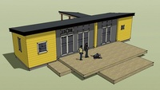
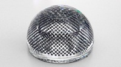

Wed, 07 Mar 2012 13:00:37 GMT
YouTube añade miniaturas a la barra del visor
YouTube añade miniaturas a la barra del visor
Hace un tiempo que YouTube ya estuvo haciendo pruebas para añadir miniaturas a su visor y que fuera mucho más fácil encontrar momentos concretos en los vídeos. Por fin está confirmado oficialmente y a lo largo de las próximas semanas … Sigue leyendo →
Hace un tiempo que YouTube ya estuvo haciendo pruebas para añadir miniaturas a su visor y que fuera mucho más fácil encontrar momentos concretos en los vídeos. Por fin está confirmado oficialmente y a lo largo de las próximas semanas empezaremos a ver como añaden esta funcionalidad a todos los vídeos. A continuación os explicamos como funcionan las 3 nuevas funciones de miniaturas que incluirán.
Por un lado existirá la posibilidad de ver la miniatura directamente al posarte sobre una zona concreta de la barra del visor, pudiendo comprobar que puede verse en ese momento del vídeo.
Si en vez de eso lo que hacemos es arrastrar, entonces podremos ver una serie de miniaturas previas y posteriores, así que podremos buscar con más detalle sin problemas.
¿Y qué ocurre con los vídeos largos? Pues en el caso de vídeos de más de 90 minutos, tendrás además una barra adicional con zoom sobre una sección de la barra principal, de manera que podrás seleccionar momentos muy concretos fácilmente y sin necesidad de ser neurocirujano.
Eso sí, no queda muy claro si para poder disfrutar de las nuevas funcionalidades en vídeos embebidos en páginas externas a YouTube habrá que usar iFrames o simplemente no será posible. [YouTube]

Wed, 07 Mar 2012 11:44:01 GMT
Cajas fuertes de papel, absurdas pero curiosísimas
Cajas fuertes de papel, absurdas pero curiosísimas
Si te dijeran que hay una manera de crearte tus propias cajas fuertes sin necesidad de herramientas complicadas, con un coste irrisorio y de forma sencilla, la verdad es que dan ganas de hacerte unas cuantas. Pero claro, cuando te … Sigue leyendo →
historias relacionadas
Pompas de jabón fluorescentes para raves y fans de Chimo Bayo
En Ikea se han venido arriba: casas para montar
Consigue un ukelele electrónico combinando un iPad y un iPhone
Convierte tu frigorífico en una caja fuerte con este reloj de cocina a prueba de ladrones
Omniscient Siri, la funda para iPhone 4S que le da cara a Siri
Si te dijeran que hay una manera de crearte tus propias cajas fuertes sin necesidad de herramientas complicadas, con un coste irrisorio y de forma sencilla, la verdad es que dan ganas de hacerte unas cuantas. Pero claro, cuando te dicen que son de papel, la cosa cambia un poco. Aunque no te sirvan para guardar tus bienes más preciados, como tu primera copia original del Sensible Soccer, al menos sí que disfrutarás de la ingeniería papelera.
Pinche aquí para ver el vídeo
Y es que cada vez vemos más maravillas mecánicas hechas simplemente con papel. Puede que esta caja fuerte no llegue al nivel de los complicados sistemas de engranajes que he visto por ahí, pero es bastante sencilla de hacer y es una buena introducción a este curioso mundo.
Fácil, barato y educativo, que más se le puede pedir. Además es un excelente proyecto para echar una tarde con tus hijos, sobrinos o alumnos. Aquí puedes encontrar los planos, creados por Rob Ives, y si finalmente te “picas” con el mundo papelero, tienes el genial Pepakura y cientos de páginas con diseños increíbles. [BoingBoing]
Wed, 07 Mar 2012 00:20:05 GMT
Hoy 7 de marzo a las 19:00 te ofrecemos el live blog del evento Apple
Hoy 7 de marzo a las 19:00 te ofrecemos el live blog del evento Apple
Ya estamos en marzo, época preprimaveral y temporada de nuevos iPads. Al menos eso es lo que todos esperan que presenten hoy día 7 de marzo en el evento Apple que se celebrará en San Francisco a las 19:00 hora … Sigue leyendo →
historias relacionadas
Esta es la carcasa del iPad3 / iPadHD
La isla misteriosa de los insectos de palmo
La operadora rusa CBOSS se aprovechó de la belleza femenina para captar clientes [Veredicto: inventando el agua fría]
No habrá Nokia 808 PureView en EEUU
Así se ve la pantalla Retina del iPadHD que podrás comprar el 16 de marzo
Ya estamos en marzo, época preprimaveral y temporada de nuevos iPads. Al menos eso es lo que todos esperan que presenten hoy día 7 de marzo en el evento Apple que se celebrará en San Francisco a las 19:00 hora española. Millones de ojos de todo el mundo estarán pendientes para ver que novedades serán las reales de los muchísimos rumores que nos llegan desde hace meses sobre el nuevo iPad.
Pero aunque todo apunta a un evento casi en exclusiva para el iPad HD, y del anuncio de sus numerosas novedades de hardware y software frente al iPad 2, algunos hablan de minipresentaciones de un posible iPod nuevo e incluso una versión mejorada de Apple TV.
Normalmente en Apple no suelen mezclar cosas últimamente, así que probablemente no veamos nada concerniente a lo que no sea el universo tabletero. Aún así, seguro que como siempre el evento será todo un espectáculo.
Recordad que tendréis todo lo referente al evento en directo en nuestro live blog aquí. Nos vemos esta tarde a partir de las 19:00 hora española y acordaos de hacer palomitas, pizza o cualquier tipo de comida repleta de sal y/o grasa.
Tue, 06 Mar 2012 21:18:55 GMT
Llega Google Play: todo diversión, todo junto
Llega Google Play: todo diversión, todo junto
Si dentro del Universo Google cada vez puedes encontrar más cosas (buscador, correo, suite ofimática, mensajería…) ¿por qué no agrupar el ocio? Pues ya tardaban. Aplicaciones, películas, música y libros, tanto para ordenadores como para dispositivos Android. Imagina un iTunes … Sigue leyendo →
historias relacionadas
Cheetah (guepardo): el nuevo robot con patas de DARPA corre que se las pela
Samsung Galaxy Player 70+: le falta llamar por teléfono
Las gafas-espía más discretas (hasta hoy, mañana ya veremos)
Por fin un stylus para iPad sensible a la presión
Exmobaby Suit, el traje biométrico para bebés y padres paranoicos
Si dentro del Universo Google cada vez puedes encontrar más cosas (buscador, correo, suite ofimática, mensajería…) ¿por qué no agrupar el ocio? Pues ya tardaban. Aplicaciones, películas, música y libros, tanto para ordenadores como para dispositivos Android. Imagina un iTunes pero para Android. Pues eso es GooglePlay, y acaba de presentarse.
A veces la revolución llega sin hacer demasiado ruido y este es el caso de GooglePlay.
Una interfaz común de usuario para la parte de entretenimento de Google que nos recuerda a Android Market, quizá más intuitivo, y desde luego más completo al ofrecer acceso a un catálogo más amplio y variado de contenidos.
Dentro de las categorías básicas, Música, Películas, Aplicaciones y Libros puedes tener tu selección dentro de cada uno de tus favoritos, en la que se almacenan los que ya hasyas adquirido.
Puede ser un mayor cambio para los usuarios de ordenador pero los que frecuenten Android Market ya tendrán una idea de qué encontrar aunque esta tienda para los dispositivos móviles con el SO de Google pronto evolucionará para convertirse definitivamente en PlayStore.
De manera inminente cuando accedas a los servicios Google descubrirás un enlace directo a Play en la parte superior de la ventana, cerca de los accesos a Calendario, Documentos, etc, que te dará entrada a la página principal de Google Play.
No han hecho mucho ruido, como hemos dicho, a la hora de presentarlo pero es seguro que con el tiempo se convertirá en una herramienta más de la completa gama de soluciones que desde hace años viene ofreciendo Google, integrando de manera muy natural todas las utilidades que han puesto al servicio de sus usuarios. ─[Google Play]
Tue, 06 Mar 2012 17:18:37 GMT
EXP 9F: Bentley también quiere vendernos un SUV
EXP 9F: Bentley también quiere vendernos un SUV
El mundo de las cuatro ruedas tiene un referente indudable en cuanto al lujo alojado en un vehículo que no sea estrictamente una berlina y tampoco un deportivo: el Range Rover. Aparentemente un todoterreno aunque da pena meterlo en un … Sigue leyendo →
historias relacionadas
El B-Max llama al 112 si te ve en apuros
Con esta maleta patinete nunca más perderás tu conexión de vuelo
El mundo de las cuatro ruedas tiene un referente indudable en cuanto al lujo alojado en un vehículo que no sea estrictamente una berlina y tampoco un deportivo: el Range Rover. Aparentemente un todoterreno aunque da pena meterlo en un barrizal. Hay otras marcas que en los últimos años han mantenido presencia en ese segmento (Mercedes ML, BMW X5, Audi Q7, Cadillac Escalade, Porsche Cayenne, Volkswagen Tuareg…) pero siempre parecían quedar un escalón por debajo del modelo de referencia. Ahora Bentley, históricamente ligado a la exquisitez sobre ruedas, se atreve con el segmento SUV (sport utility vehicle) gracias a su proyecto EXP 9F.
Bentley se plantea aumentar su lujosa familia con un todocamino.
Además de la ultralujosa berlina Mulsanne, bajo las alas de Bentley se encuentra la gama Continental, que incluye la berlina Flying Spur, el coupé GT y el descapotable GTC, estos tres últimos con la misma base sobre la que se articulan las diferentes opciones de carrocería.
Se trataría de completar la oferta de vehículos de gran lujo con un modelo que por potencia probablemente sería capaz de plantar cara a situaciones de cierta complicación fuera del asfalto pero cuyos propietarios probablemente no lleguen a ensuciarlo más que para vadear algún charco en la finca, sortear una pista forestal de camino a la montería o pasar sobre un pequeño tramo de hierba para acomodar el vehículo en un picnic.
Con un motor de 12 cilindros en configuración W y una cilindrada de 6.000 c.c. parece que subir una empinada cuesta, vadear un riachuelo poco profundo, salir de un barrizal o acercar a los pasajeros a la orilla de la playa no debería constituir un grave contratiempo.
Pero es que además el interior mantiene el nivel de lujo de la marca gracias al refinado diseño y al empleo de los más delicados y exquisitos materiales confeccionados a mano de forma artesanal. Madera, piel y metal que configuran un habitáculo extraordinario.

La parte trasera viene especialmente preparada para ofrecer todas las comodidades a los pasajeros (preferentemente dos, un tercero situado en medio no viajaría tan a gusto) incluyendo reposapiés regulables eléctricamente y acceso a Internet con teclado inalámbrico así como una pantalla en la que disfrutar de contenidos multimedia.
El amplio maletero puede guardar, además del equipaje, un lujoso conjunto de picnic con una completa cubertería, vajilla y accesorios alojados en unas maletas específicas para llevar a un concepto superior la idea de “merendola campestre”. El caviar beluga y el champán ya toca ponerlos a cada uno.
El techo cuenta con un doble cristal panorámico que permite gozar de amplia iluminación a todo el habitáculo. Ahora sólo queda esperar a que este avanzado concepto tome forma y termine rodando por las carreteras. ─[Bentley Motors]
Tue, 06 Mar 2012 13:31:59 GMT
Microsoft quiere agilizar la navegación por internet en móviles
Microsoft quiere agilizar la navegación por internet en móviles
Los humanos somos seres de costumbres y Microsoft se ha dado cuenta de ello, al menos en lo que respecta a la navegación con móviles. Gracias a un estudio realizado con 8.000 usuarios de Bing, Microsoft ha desarrollado un sistema … Sigue leyendo →
historias relacionadas
Un magnate ruso quiere trasplantar nuestras mentes a robots
El carrito de la compra automático con Kinect da más mal rollo que HAL 9000
Las opciones hápticas para tablets y smartphones en el MWC
Marzo Negro ¿podrá parar las leyes “antiinternet”?
Sphelar, la celular solar multidireccional esférica
Los humanos somos seres de costumbres y Microsoft se ha dado cuenta de ello, al menos en lo que respecta a la navegación con móviles. Gracias a un estudio realizado con 8.000 usuarios de Bing, Microsoft ha desarrollado un sistema para predecir las páginas que se visitan con el móvil y permitir descargarlas antes en segundo plano para poder verlas más rápidamente. Se llama PocketWeb y con él quieren adelantarse a la competencia.
Está claro que prácticamente a cualquier desarrollador web le salen sarpullidos nada más escuchar “internet explorer”, y es que a pesar de ser todavía el navegador más usado, trae de cabeza a cualquier por culpa de incompatibilidad de estándares.
Pero navegadores infames aparte, Microsoft quiere dejar de ser sinónimo de quebraderos de cabeza en Internet. Puede que en los ordenadores les vaya a costar, pero al menos en su sistema operativo para móviles quiere tener cierta ventaja.
Por esto surge PocketWeb, que gracias al análisis de registros de usuarios de WP, iOS, Android y Blackberry asegura que puede predecir el 60% de las páginas que van a visitar el 80-90% de los usuarios, 2 minutos antes.
Esto junto con una clasificación de usuarios en grupos según sus costumbres, permite una predicción del comportamiento sin precedentes que facilita la descarga previa y e ahorro de energía.
Claro que esto es el aspecto “bonito” del sistema, lo que no se dice es lo que pueden llegar a hacer las empresas con nuestras “costumbres”. Como llegar a convertirnos en víctimas de sistemas como los grandes almacenes Target, que basándose en nuestro consumo hasta puede predecir embarazos.
Si al menos hicieran algo bueno por la humanidad, como predecir el final de Lost en la primera temporada… [ITespresso]
Tue, 06 Mar 2012 11:54:15 GMT
Consigue un ukelele electrónico combinando un iPad y un iPhone
Consigue un ukelele electrónico combinando un iPad y un iPhone
Puede parecer absurdo y totalmente innecesario, sobre todo por lo poco que ocupa y cuesta un ukelele, pero aún así, hay que reconocer que este ukelele electrónico virtual llamado Futulele y creado por la empresa Amidio combinando un iPhone y … Sigue leyendo →
historias relacionadas
En Ikea se han venido arriba: casas para montar
Por fin un stylus para iPad sensible a la presión
Convierte tu frigorífico en una caja fuerte con este reloj de cocina a prueba de ladrones
Cajas fuertes de papel, absurdas pero curiosísimas
Omniscient Siri, la funda para iPhone 4S que le da cara a Siri

Puede parecer absurdo y totalmente innecesario, sobre todo por lo poco que ocupa y cuesta un ukelele, pero aún así, hay que reconocer que este ukelele electrónico virtual llamado Futulele y creado por la empresa Amidio combinando un iPhone y un iPad es sencillamente genial. A continuación un vídeo para lo que veáis en funcionamiento y os maravilléis con esta aplicación iOS.
Pinche aquí para ver el vídeo
Los desarrolladores de Amidio son conocidos por sus aplicaciones musicales para iOS de gran calidad, como el genial OMGuitar, pero esta vez han querido ir más allá y no sólo ofrecer un sonido de gran calidad y posibilidades para darle “feeling” a lo que tocas, sino que esta vez han creado un interfaz muy similar al instrumento.
La idea de Futulele es usar un iPhone como mástil, para seleccionar los trastes, y el iPad como cuerpo para rasguear las cuerdas. El resultado como habréis visto no puede ser mejor.
La conexión se consigue utilizando bluetooth y tras varias optimizaciones han conseguido prácticamente un lag inexistente entre los dos. Pero no sólo te permite tocar un ukelele, sino también grabar, aplicar efectos y muchas de las posibilidades que ya tenía OMGuitar.
Por ahora no existe ninguna carcasa que pueda juntar los dos dispositivos y esperan poder contactar con fabricantes interesados en crearlas, y que además incluyan extras como altavoces, batería y hasta salida para amplificador.
Ojalá estuviera disponible para el resto de sistemas operativos móviles y no sólo para iOS, ese es quizás el único fallo que hace que esta genial aplicación no pueda ser disfrutada por todo el mundo. [BoingBoing]
Tue, 06 Mar 2012 10:40:31 GMT
La operadora rusa CBOSS se aprovechó de la belleza femenina para captar clientes [Veredicto: inventando el agua fría]
La operadora rusa CBOSS se aprovechó de la belleza femenina para captar clientes [Veredicto: inventando el agua fría]
Además de novedades tecnológicas y lanzamientos esperados, el MWC, Congreso Mundial de Telefonía, celebrado recientemente en Barcelona, ha permitido constatar un hecho que quizá algunos aún dudaban: las chicas guapas venden. Es la conclusión de una concienzuda investigación del diario … Sigue leyendo →
historias relacionadas
Esta es la carcasa del iPad3 / iPadHD
La isla misteriosa de los insectos de palmo
No habrá Nokia 808 PureView en EEUU
Hoy 7 de marzo a las 19:00 te ofrecemos el live blog del evento Apple
Así se ve la pantalla Retina del iPadHD que podrás comprar el 16 de marzo
Además de novedades tecnológicas y lanzamientos esperados, el MWC, Congreso Mundial de Telefonía, celebrado recientemente en Barcelona, ha permitido constatar un hecho que quizá algunos aún dudaban: las chicas guapas venden. Es la conclusión de una concienzuda investigación del diario británico The Telegraph que ha sacado a la luz una trama urdida por el operador ruso de telefonía CBOSS consistente en emplear los encantos de bellas mujeres como incentivo para cerrar negocios.
Aunque resulta ya habitual la omnipresencia de bellas modelos en los stands de las marcas que acuden a este tipo de eventos, al parecer CBOSS había organizado un programa de actividades aún más completo para convencer a sus principales clientes de que cerraran negocios con ellos.
Consistía en organizar cenas a solas con algunas de estas bellas chicas a fin de que durante las mismas los futuros clientes tuvieran la oportunidad de “mantener una profunda inspección de las tendencias en el negocio de las telecomunicaciones“. Ahora se llama así.
La propia CBOSS expresa que no le cabe al menor duda que la presencia de champán, caviar y bellas chicas durante la reunión ayudaría a “favorecer una verbalización más adecuada de los pensamientos profundos del inconsciente”.
Algunas de las ejecutivas presentes en el MWC mostraron su malestar por este comportamiento sexista quejándose a la organización, aunque no se ha aclarado del todo si el problema es que no se habían previsto encuentros similares en los que además de alguna Irina hubiese también algún Boris disponible para ellas. ─[The Telegraph]
Mon, 05 Mar 2012 19:49:55 GMT
Samsung Galaxy Player 70+: le falta llamar por teléfono
Samsung Galaxy Player 70+: le falta llamar por teléfono
¿Cómo llamas a un dispositivo de entretenimiento portátil de tamaño inferior a un tablet que no te permite llamar por teléfono como un smartphone pero que es demasiado grande para quedarse en MP3? En Samsung lo tienen claro y le … Sigue leyendo →
historias relacionadas
Cheetah (guepardo): el nuevo robot con patas de DARPA corre que se las pela
Las gafas-espía más discretas (hasta hoy, mañana ya veremos)
Por fin un stylus para iPad sensible a la presión
Llega Google Play: todo diversión, todo junto
Exmobaby Suit, el traje biométrico para bebés y padres paranoicos
¿Cómo llamas a un dispositivo de entretenimiento portátil de tamaño inferior a un tablet que no te permite llamar por teléfono como un smartphone pero que es demasiado grande para quedarse en MP3? En Samsung lo tienen claro y le han llamado Galaxy Player 70. No es un Tab, no es un Note, no es un móvil… es la versión coreana de un iPod touch pero con pantalla de 5″.
Se acaba de presentar en Corea del Sur, en la del Norte está prohibido usar móvil durante 100 días debido al luto por la muerte de su Querido Líder, como ya te informamos aquí en Gizmodo en su momento, así que están para pocas presentaciones de cachivaches electrónicos.
Con el nombre de Samsung Galaxy Player 70 se ofrece un dispositivo muy similar al Galaxy Note (pantalla de 5″ obliga a la comparación). Dispone de un procesador de doble núcleo a 1 GHz, cámara de 5 megapíxels, Wi-Fi, batería de 2.500 mAh y sintonizador de TDT.
Hay dos versiones, con memoria interna de 16 ó 32 Gb y viene a suceder al modelo homónimo (sin el + al final) que salió hace justo un año y que presentaba menor tamaño de pantalla y procesador de núcleo único.
El mayor tamaño de pantalla hace que la marca lo publicite como especialmente destinado a los estudiantes dado que gracias a ella podrán tener un mejor acceso a materiales de estudio y consulta a través de la plataforma “Smart Edu”.
Evidentemente su fuerte es la reproducción de contenidos audiovisuales, la navegación por Internet y la mayor comodidad para ejecutar las miles de aplicaciones de Android, que es el SO que utiliza.
Y tal vez, sólo tal vez, la existencia de dispositivos de ocio de este tamaño, superior a los smartphones pero inferior a los tablets, sea lo que esté detrás de ese rumor que habla de la posible existencia de planes en Apple para lanzar un “iPadMini” de 7″ que en realidad podría ser más bien una evolución del iPod touch antes que un tablet reducido. ─[Akihabara News]
Mon, 05 Mar 2012 18:55:40 GMT
La isla misteriosa de los insectos de palmo
La isla misteriosa de los insectos de palmo
Algo tienen las islas que termina convirtiéndolas en reclamos para los amantes de lo misterioso. Pero es que dejando a un lado misteriosas islas imaginarias como la de la novela homónima de Julio Verne o la célebre isla de “Perdidos” … Sigue leyendo →
historias relacionadas
Esta es la carcasa del iPad3 / iPadHD
La operadora rusa CBOSS se aprovechó de la belleza femenina para captar clientes [Veredicto: inventando el agua fría]
No habrá Nokia 808 PureView en EEUU
Hoy 7 de marzo a las 19:00 te ofrecemos el live blog del evento Apple
Así se ve la pantalla Retina del iPadHD que podrás comprar el 16 de marzo
Algo tienen las islas que termina convirtiéndolas en reclamos para los amantes de lo misterioso. Pero es que dejando a un lado misteriosas islas imaginarias como la de la novela homónima de Julio Verne o la célebre isla de “Perdidos” o la que da nombre a la serie “Alcatraz”, parecen ser estos reductos aislados los que concitan un mayor número de especies animales curiosas, debido precisamente a la falta de contacto con otras especies así como en determinados casos, la estabilidad geológica y climatológica que permite que continúen viviendo especies casi prehistóricas, como los reptiles que habitan en las islas Galápagos o estos enormes insectos de Ball´s Island, una isla que sería perfecta para encontrar en ella a King Kong.
La semana pasada dábamos cuenta aquí en Gizmodo del hallazgo en Nueva Zelanda de un curioso insecto que parece mezclar elementos de araña y de mosca.
Seguimos por aquella zona para hacernos eco de una isla de singular aspecto, conocida también como la Pirámide de Ball, situada en pleno Mar de Tasmania y que a pesar de su inhóspito aspecto es capaz de albergar especies singulares como estos insectos que si no fueran capaces de provocar repelús por su aspecto mezcla de cucaracha y escorpión terminan de darte el susto gracias a su formidable tamaño. Como puedes comprobar no te caben en la palma de la mano.
La curiosa isla de Ball es cuanto queda de una erupción volcánica ocurrida hace 7 millones de años. Un oficial de la marina británica fue el primer occidental en avistarla allá por 1788 y de ahí su denominación. Está situada a unos 20 kms de otra isla algo mayor (Lord Howe) en la que en tiempos existían insectos como el referido, de unos 12 cms. de longitud, bautizado por los pescadores locales como “langosta arborícola”, siendo usada como cebo para la pesca.
Lo curioso del caso es que un par de exploradores se aventuraron en ese peñasco de apenas 500 metros de longitud y 150 de alto y cuál no sería su sorpresa al encontrar viviendo plácidamente bajo uno de los escasos arbustos que se encuentran allí a una pareja de estos insectos que, al no tener alas, no se explica fácilmente cómo habían llegado a habitar ese enclave tan alejado de su isla originaria.
En la isla mayor además esta especie se suponía extinguida desde hace casi un siglo en que una plaga de ratas procedentes de un carguero diezmó la población de este insecto. Afortunadamente hubo algún ejemplar, el típico pariente viajero o el que está peleado con toda la familia y se va a vivir bien lejos, que logró llegar por algún medio a la isla Ball y allí sobrevivieron hasta ser recientemente encontrados en medio de esa especie de pirámide rocosa emergida de las aguas.
Unos bichitos bicharracos supervivientes natos que pudieron llegar allí (tal vez sus huevos) gracias a algún pájaro y que sorprendentemente han sobrevivido en un lugar en el que apenas hay un par de arbustos… literalmente, uno y dos, no es una forma de hablar puesto que a decir de los descubridores Ball´s Island es un peñasco de roca desnuda en mitad de la nada.
Ahora los entomólogos están cultivando huevos de estos bichos con la idea de repoblar la isla de Lord Howe de la que desaparecieron pero se están encontrando con que a la población no le hace demasiada gracia tropezarse con tan singular criatura en medio de la noche… por nadie pase. ─[NPR]
Mon, 05 Mar 2012 17:31:13 GMT
Esta es la carcasa del iPad3 / iPadHD
Esta es la carcasa del iPad3 / iPadHD
Horas mal contadas nos separan de la presentación este miércoles 7 de marzo de la tercera generación del tablet de Apple. Si finalmente se llama iPad3 o iPadHD lo sabremos también entonces. Hasta que llegue ese momento en el que … Sigue leyendo →
historias relacionadas
Samsung Galaxy Player 70+: le falta llamar por teléfono
La operadora rusa CBOSS se aprovechó de la belleza femenina para captar clientes [Veredicto: inventando el agua fría]
No habrá Nokia 808 PureView en EEUU
Hoy 7 de marzo a las 19:00 te ofrecemos el live blog del evento Apple
Así se ve la pantalla Retina del iPadHD que podrás comprar el 16 de marzo

Horas mal contadas nos separan de la presentación este miércoles 7 de marzo de la tercera generación del tablet de Apple. Si finalmente se llama iPad3 o iPadHD lo sabremos también entonces. Hasta que llegue ese momento en el que todo será oficial continúan las filtraciones sobre el dispositivo. La penúltima es este vídeo que os ofrecemos a continuación en el que podemos apreciar la carcasa del mismo y donde descubrimos que el aspecto exterior es prácticamente idéntico al del iPad2.
Un grosor añadido apenas perceptible y poco más.
Habrá que buscar en el interior la diferencia entre iPad2 e iPad3 o iPadHD, según apuntan algunos rumores acerca de la denominación, en la que se pondría énfasis en la pantalla Retina Display con que vendría dotado el aparato.
Precisamente sería esa pantalla de mayor resolución la responsable de que este tablet presente un grosor ligeramente superior al de su antecesor al tener que dejar espacio para unas baterías que le permitan una autonomía equivalente debido a los mayores requerimientos energéticos.
De ser fiable el vídeo despejaría también una cuestión que últimamente se ponía en duda: la presencia del botón físico de inicio en la parte inferior del marco. También se nos muestra el conector, que sigue siendo el habitual en los dispositivos de la manzanica mordía. Se confirma igualmente la presencia de los pequeños imanes que posibilitan el uso de la Smart Cover. Precisamente en ese punto del vídeo que podéis ver aquí se puede apreciar comparativamente con el aspecto de un iPad2 el grosor del nuevo modelo.
También podemos comparar la carcasa con un iPad2 y descubrimos una sutil diferencia en el tamaño del hueco destinado a la óptica de la cámara de fotos, que parece presagiar un aumento en el número de megapíxels que ofrecerá. ─[MICgadget]
Mon, 05 Mar 2012 13:39:41 GMT
Batalla de titanes móviles tetranucleares
Batalla de titanes móviles tetranucleares
Gran parte de la atención del MWC se la llevaron los móviles con procesadores de 4 núcleos. No está muy claro que sean necesarios, al menos para el usuario normal, pero por ahora mismo tenemos 3 contendientes: el HTC One … Sigue leyendo →
historias relacionadas
Samsung Galaxy Player 70+: le falta llamar por teléfono
Las gafas-espía más discretas (hasta hoy, mañana ya veremos)
Por fin un stylus para iPad sensible a la presión
Llega Google Play: todo diversión, todo junto
Exmobaby Suit, el traje biométrico para bebés y padres paranoicos
Gran parte de la atención del MWC se la llevaron los móviles con procesadores de 4 núcleos. No está muy claro que sean necesarios, al menos para el usuario normal, pero por ahora mismo tenemos 3 contendientes: el HTC One X, el LG Optimus 4X HD y, la sorpresa, el Huawei Ascend D quad. Mientras que esperamos a que el terreno tetranuclear aumente bastante a lo largo del año, aquí tenéis información de cada uno de ellos.
Los tres cuentan con una pantalla de resolución de 720 x 1280 y tanto HTC como LG apuestan por el formato 4,7 pulgadas, mientras que Huawei se queda con 4,5. En cuanto a la calidad de la pantalla HTC golea gracias a Super IPS LCD2.
En cuanto al procesador Huawei se queda en 1,2GHz, y HTC y LG utilizan 1,5. La RAM es la misma en todos, 1GB, al igual que la cámara delantera de 1,3MP y trasera de 8MP con autofocus y flash LED.
Pero es aquí nuevamente donde HTC destaca gracias a su procesador exclusivo para la cámara, que permite una velocidad increíble junto con la posibilidad de grabación simultánea de vídeo y fotos a máxima resolución.
En cuanto a conectividad HTC vuelve a ganar gracias a disponer de NFC y Bluetooth 4.0, pero tristemente uno de sus grandes fallos es que no posee ranura microSD, algo prácticamente incomprensible.
Las dimensiones y pesos de los tres son muy parecidas, al igual que sus baterías de 1.800 mAh, siendo sólo LG el que ha sabido cubrirse las espaldas con una excelente batería de 2.140.
En resumen, que a falta de saber precios y su respuesta real con benchmarks, el HTC One X tiene bastantes papeletas para ganar por ahora. Veremos que ocurre cuando salgan a la venta y podamos también conocer al resto de contendientes. [GSMArena]
Mon, 05 Mar 2012 12:28:50 GMT
La tecnología PureView de Nokia llegará a Windows Phone
La tecnología PureView de Nokia llegará a Windows Phone
El Nokia 808 ganó el premio al mejor móvil, dispositivo o tablet del MWC de este año, y todos hemos podido ver sus sorprendentes fotos gracias a PureView, pero claro, el resto de cualidades del móvil salvo su sonido, lo … Sigue leyendo →
historias relacionadas
La isla misteriosa de los insectos de palmo
La operadora rusa CBOSS se aprovechó de la belleza femenina para captar clientes [Veredicto: inventando el agua fría]
No habrá Nokia 808 PureView en EEUU
Hoy 7 de marzo a las 19:00 te ofrecemos el live blog del evento Apple
Así se ve la pantalla Retina del iPadHD que podrás comprar el 16 de marzo
El Nokia 808 ganó el premio al mejor móvil, dispositivo o tablet del MWC de este año, y todos hemos podido ver sus sorprendentes fotos gracias a PureView, pero claro, el resto de cualidades del móvil salvo su sonido, lo dejan como sucesor del N8, que no llegó a convencer al gran público. Ahora nos dicen que la tecnología PureView dará en un futuro cercano el salto de Symbian a Windows Phone. ¿Por qué mostrarlo ahora y la demora?
Parece ser que el 808 es el móvil “de prueba” con el que Nokia quería ya por fin sacar su tecnología PureView en la que habría estado trabajando durante 5 años.
La razón de no sacarlo directamente con Windows Phone se debe a que el desarrollo se había estado realizando en Symbian todo este tiempo, y modificarlo para Windows Phone habría supuesto un retraso, además de que portar PureView a Windows Phone si luego la gente no lo apoya sería gastar recursos.
Según declaraciones de Jo Harlow, vicepresidente de Nokia, al periódico finlandés Aamulehti, el paso de PureView a Windows Phone es seguro pero no se sabe justo cuando, aunque no dentro de mucho.
Probablemente lo veremos con la versión Apollo de Windows Phone, que supondrá además la integración con tablets y ordenadores, y un nuevo desembarco de varios grandes, junto con Nokia, al terreno smartphonístico microsoftiano.
Todo esto ocurrirá muy probablemente a finales de año, así que al 808, como siempre he dicho, le auguro menos futuro que a un vendedor de polvorones en agosto. ¿Es lícito jugar a dos bandas de esa manera con la gente, siguiendo con Symbian para “experimentar”, cuando está claro que apuestan y saben que su futuro es Windows Phone? Ahí ya que cada uno piense lo que quiera. [WPCentral]
Wed, 07 Mar 2012 12:19:34 GMT
Omniscient Siri, la funda para iPhone 4S que le da cara a Siri
Omniscient Siri, la funda para iPhone 4S que le da cara a Siri
En una mezcla entre lo gigeriano y un T-1000, esta “curiosa” funda para iPhone 4S propone darle cara a Siri. De momento además de eso también consigue que sea totalmente imposible guardarlo en un bolsillo, inutilizar completamente la pantalla táctil, … Sigue leyendo →
historias relacionadas
Pompas de jabón fluorescentes para raves y fans de Chimo Bayo
En Ikea se han venido arriba: casas para montar
Consigue un ukelele electrónico combinando un iPad y un iPhone
Convierte tu frigorífico en una caja fuerte con este reloj de cocina a prueba de ladrones
Cajas fuertes de papel, absurdas pero curiosísimas

En una mezcla entre lo gigeriano y un T-1000, esta “curiosa” funda para iPhone 4S propone darle cara a Siri. De momento además de eso también consigue que sea totalmente imposible guardarlo en un bolsillo, inutilizar completamente la pantalla táctil, y por supuesto, dar mucha cosica y hacerte pensar que en algún momento va a replicar tu cara y acoplarse a ti a lo Venom.
La creación de esta “maravillosa” funda se debe a un concurso de la conocida empresa de fabricación 3D, Shapeways. Ésta es la funda ganadora diseñada por SaGa Design, con el nombre de Omniscient Siri.
Como veis la pantalla está totalmente inaccesible, aunque al menos tiene aperturas para todos los botones, ranuras y cámara. La idea es permitir el uso del móvil sólo con comandos de voz.
Pero lo mejor es que, junto con sus innumerables ventajas y beneficios ergonómicos, de comodidad y utilidad, su precio es totalmente adecuado e irresistible. Sí Gizmolectores, tan sólo os costará 90 dólares en su versión blanco Apple, o 350 sí la queréis bañada en oro y hacerla aún más discreta.
Ante tales ventajas y precios seguro que en Shapeways ya están invirtiendo en mucha más maquinaria para poder desarrollar suficientes fundas para la ingente cantidad de pedidos que esperan. [Geekosystem]
Wed, 07 Mar 2012 10:40:24 GMT
Exmobaby Suit, el traje biométrico para bebés y padres paranoicos
Exmobaby Suit, el traje biométrico para bebés y padres paranoicos
Puede que no sea como el traductor de balbuceos de bebés del hermano de Homer Simpson, pero el traje de bebés Exmobaby quiere ayudarte a entender a los bebés y lo que les está pasando gracias a una combinación de … Sigue leyendo →
historias relacionadas
Cheetah (guepardo): el nuevo robot con patas de DARPA corre que se las pela
Samsung Galaxy Player 70+: le falta llamar por teléfono
Las gafas-espía más discretas (hasta hoy, mañana ya veremos)
Por fin un stylus para iPad sensible a la presión
Llega Google Play: todo diversión, todo junto
Puede que no sea como el traductor de balbuceos de bebés del hermano de Homer Simpson, pero el traje de bebés Exmobaby quiere ayudarte a entender a los bebés y lo que les está pasando gracias a una combinación de sensores ECG que permiten conocer el ritmo cardíaco, la temperatura de la piel, la humedad y su movimiento. Gracias a esto se puede saber su estado físico, comportamiento y hasta “emociones”, alimentando por supuesto a la vez, la paranoia de los padres primerizos.
En concreto cuenta con 3 sensores que no contactan directamente con la piel, distribuidos por diferentes partes del traje. Los datos se envían a un sistema de control que utiliza tecnología inalámbrica Zigbee.
Éste dispositivo se encargará de evaluar la situación y enviar información mediante email, SMS o directamente a un receptor específico.
Lo curioso es que no sólo sirve para conocer el estado de salud del bebé y monitorizar lo que hace, sino también para saber que puede estar sintiendo, gracias a un sistema interactivo que asocia datos biométricos con estados como “cabreado”, “feliz”, “inquieto” o muchos otros definidos por los padres.
Por ahora este curioso sistema desarrollado por Exmovere Holdings está en proceso de evaluación, aunque puedes comprar uno de los 1.000 kits que están suministrando.
El kit básico, con un traje, transceptor Zigbee, software para ordenador y móvil, y 6 cuotas de servicio online, cuesta 1.000 dólares. El kit “deluxe” con 4 trajes, cada uno de un tamaño diferente, cuesta 2.500.
¿Qué opináis, merece la pena un sistema como éste o no es más que parte de la histeria colectiva del mundo de los bebés que incita al gasto desmesurado? [Geek]
Wed, 07 Mar 2012 00:17:12 GMT
Convierte tu frigorífico en una caja fuerte con este reloj de cocina a prueba de ladrones
Convierte tu frigorífico en una caja fuerte con este reloj de cocina a prueba de ladrones
¿Estás a régimen? ¿guardas en la nevera caviar, champán, ibéricos, yogur “jroña ka jroña”? Para decorar, para
historias relacionadas
Pompas de jabón fluorescentes para raves y fans de Chimo Bayo
En Ikea se han venido arriba: casas para montar
Consigue un ukelele electrónico combinando un iPad y un iPhone
Cajas fuertes de papel, absurdas pero curiosísimas
Omniscient Siri, la funda para iPhone 4S que le da cara a Siri
¿Estás a régimen? ¿guardas en la nevera caviar, champán, ibéricos, yogur “jroña ka jroña”? Para decorar, para que necesita estar en el horno ese delicioso plato que estás preparando o para desanimar a quien pretenda asaltar tu frigorífico, para esos y otros usos, hoy te recomendamos este cronómetro-imán que hará que tu cocina parezca el sótano de un banco con su caja de caudales y todo.
En ocasiones nos dolería menos que un asaltante se llevara de nuestra casa la porcelana regalo de bodas de la tía Enriqueta o el marco de plata de ley con la foto de la suegra que si desaparece del frigo el taper de magra con tomate que te trajiste el domingo de casa de tu madre.
Es en casos así cuando vendría de perlas poner un cierre con combinación en la puerta de la nevera. Mientras lo inventan puede hacer su papel este curioso reloj de cocina, de esos que te avisan cuando han pasado los minutos programados para cocer la pasta o para hornear la dorada, solo que en esta ocasión presenta el aspecto de la típica rulacha de combinación de una caja fuerte. De hecho casi se le falta la inscripción de mar a ACME.
Al ser magnético se queda perfectamente sujeto a la puerta del frigorífico y te permite controlar intervalos de tiempo de hasta 60 minutos. Además es de esas tonterías tan simpáticas como baratas, puesto que vale $12,95… pero ¿le vas a poner precio a la seguridad de tu cerveza de importación, criatura? ─[Red Ferret]
Tue, 06 Mar 2012 21:07:43 GMT
Así se ve la pantalla Retina del iPadHD que podrás comprar el 16 de marzo
Así se ve la pantalla Retina del iPadHD que podrás comprar el 16 de marzo
Rumores, filtraciones e informaciones de última hora a cascoporro. Como ya te hemos adelantado mañana seguiremos aquí en Gizmodo con uno de nuestros exhaustivos Live Blogging la presentación oficial del nuevo tablet de Apple así como el resto de novedades … Sigue leyendo →
historias relacionadas
Esta es la carcasa del iPad3 / iPadHD
La isla misteriosa de los insectos de palmo
La operadora rusa CBOSS se aprovechó de la belleza femenina para captar clientes [Veredicto: inventando el agua fría]
No habrá Nokia 808 PureView en EEUU
Hoy 7 de marzo a las 19:00 te ofrecemos el live blog del evento Apple
Rumores, filtraciones e informaciones de última hora a cascoporro. Como ya te hemos adelantado mañana seguiremos aquí en Gizmodo con uno de nuestros exhaustivos Live Blogging la presentación oficial del nuevo tablet de Apple así como el resto de novedades que seguro habrá, pero apuramos los últimos momentos antes de que el rumor apse a ser información confirmada mostrándote un ejemplo de lo que verás en la pantalla del iPadHD así como la fecha en la que estará disponible en las tiendas.
Puede que el juego que nos sirve para establecer esta comparativa no sea el más adictivo o el que mejores gráficos tenga o el que más nos guste, pero sí parece ser el primero que nos permite valorar la evolución.
Con una resolución de 2048×1536 píxeles, la pantalla Retina Display se merece estar en la propia denominación del tabet de la manzanica mordía. Este juego, Food Run, está dibujado completamente mediante vectores con lo que se puede escalar a cualquier resolución, de esa manera podemos ver cara a cara el aspecto que presenta en los iPad 1 y 2 junto con el que tendrá en el iPad3HD.
Por otro lado podemos avanzar la fecha de disponibilidad comercial del iPadHD: el viernes 16 de marzo. El año pasado, cuando Steve Jobs nos mostró por primera vez de manera oficial el iPad2, estuvo a la venta en las tiendas el viernes de la semana siguiente a su presentación. Nada hace sospechar que en esta ocasión haya cambios por lo que sería el viernes de la semana que viene el día señalado.
Ese el el día, además, en que abrirán sus puertas algunas nuevas tiendas Apple en Houston, Londres y tal vez en Murcia, donde las obras llevan ya un par de meses en marcha. No se nos ocurre mejor momento para inaugurar un nuevo establecimiento de la manzanica mordía que hacerlo con las presumibles colas de compradores del iPdHD. ─[Book of Dev / 9to5mac]
Tue, 06 Mar 2012 13:49:51 GMT
Por fin un stylus para iPad sensible a la presión
Por fin un stylus para iPad sensible a la presión
Resulta sorprendente que con la ingente cantidad de hardware de lo más diverso que ha surgido para el iPad, sea ahora cuando por fin alguien se haya animado a crear un Stylus sensible a la presión. Se trata de Blue … Sigue leyendo →
historias relacionadas
Samsung Galaxy Player 70+: le falta llamar por teléfono
Las gafas-espía más discretas (hasta hoy, mañana ya veremos)
Consigue un ukelele electrónico combinando un iPad y un iPhone
Llega Google Play: todo diversión, todo junto
Exmobaby Suit, el traje biométrico para bebés y padres paranoicos
Resulta sorprendente que con la ingente cantidad de hardware de lo más diverso que ha surgido para el iPad, sea ahora cuando por fin alguien se haya animado a crear un Stylus sensible a la presión. Se trata de Blue Tiger, el nuevo stylus de Ten One Design que todavía está en las últimas fase de diseño, pero que, según aseguran, estará en breve entre nosotros.
Pinche aquí para ver el vídeo
Casi todos los stylus para tablets se han limitado a ser palos con un punta conductiva, pero por fin gracias a este dispositivo que utiliza Bluetooth 4 para gastar lo mínimo posible de batería, podremos por fin tener una herramienta mucho más completa.
Y es que no sólo será sensible a la presión, sino que también permitirá diferenciar entre tu mano y el stylus, para sólo funcionar con la presión del mismo. Además contará con un botón y un led multicolor que representará el color seleccionado por la aplicación.
Todos estos añadidos sólo serán accesibles para las aplicaciones que utilicen su SDK, quedando limitado a ser un stylus normal para el resto. Pero aún así, Blue Tiger supone una mejora sustancial.
Además, al utilizar bluetooth, probablemente podrá usarse también luego en otros sistemas operativos. Estaremos atentos a cuando tengan fecha de lanzamiento y precio aproximado para avisaros. [Ten One Design]
Tue, 06 Mar 2012 12:32:19 GMT
No habrá Nokia 808 PureView en EEUU
No habrá Nokia 808 PureView en EEUU
El controvertido Nokia 808 PureView sigue dando que hablar. Como cabía de esperar y a pesar de los premios, Nokia tiene claro que Symbian no es el futuro. Hace ya unos meses que quedó claro que, siguiendo palabras de Chris … Sigue leyendo →
historias relacionadas
Esta es la carcasa del iPad3 / iPadHD
La isla misteriosa de los insectos de palmo
La operadora rusa CBOSS se aprovechó de la belleza femenina para captar clientes [Veredicto: inventando el agua fría]
Hoy 7 de marzo a las 19:00 te ofrecemos el live blog del evento Apple
Así se ve la pantalla Retina del iPadHD que podrás comprar el 16 de marzo
El controvertido Nokia 808 PureView sigue dando que hablar. Como cabía de esperar y a pesar de los premios, Nokia tiene claro que Symbian no es el futuro. Hace ya unos meses que quedó claro que, siguiendo palabras de Chris Weber, respondable de Nokia en EEUU, la marca finlandesa no lanzará en el mercado estadounidense ningún móvil que no utilice Windows Phone. El 808 PureView no es una excepción y ya lo han dicho oficialmente.
Vale, ¿qué tiene que ver con nosotros lo que pase con EEUU? Pues mucho, ya que lo queramos o no, marca la tendencia del mercado, y aunque este móvil vaya a estar disponible en el resto del mundo, está claro que no lo será por mucho tiempo.
Stephen Elop ya anunció que Symbian desaparecerá en 2016, y aunque todavía quedan 4 años, tened en cuenta que será gradualmente. Por ahora es EEUU, pero luego podría seguirle Europa perfectamente en una fecha puede que cercana, siendo muy probablemente Africa o Asia los últimos reductos en los que seguirán, hasta el uso exclusivo de Windows Phone.
Puede que la “necesidad” de tener 41MP cuanto antes lleve a alguien a pillarse el 808, pero viendo como está el patio y que un PureView con Windows Phone Apollo saldrá seguramente pocos meses después, yo no veo nada claro pillarse este móvil, menos aún por 450 euros y sabiendo que la subvención de móviles en unos meses va a ser cosa del pasado. [The Verge]
Tue, 06 Mar 2012 11:30:01 GMT
Llega “Assassin´s creed III” y el trailer nos lleva a la Revolución Americana
Llega “Assassin´s creed III” y el trailer nos lleva a la Revolución Americana
Corre el año 1777 en Norteamérica. Una nación está a punto de nacer sacudiéndose el yugo de la metrópoli londinense en la Guerra de la Independencia. La Revolución Americana está en todo lo suyo y entre los bosques nevados donde … Sigue leyendo →
historias relacionadas
Zynga quiere que juguemos con ellos fuera de Facebook
Convierte tu mano en un pequeño piano [O en una manada de gatos aulladores]
Corre el año 1777 en Norteamérica. Una nación está a punto de nacer sacudiéndose el yugo de la metrópoli londinense en la Guerra de la Independencia. La Revolución Americana está en todo lo suyo y entre los bosques nevados donde se mantiene la contienda una figura misteriosa salta de rama en rama con prodigiosa habilidad. Su túnica y capucha provienen de las Cruzadas, ya lejanas en el tiempo. A continuación te ofrecemos el primer trailer que avanza una de las sensaciones videojueguiles más esperadas del año, “Assassin´s Creed III”
Las Colonias del Nuevo Mundo tratan de desgajarse de la Corona británica y ese es el complicado entorno en que se sitúa la acción en las nuevas aventuras de uno de los miembros de la Cofradía de Asesinos que conocimos hace ya más de un lustro.
Tras recorrer Asia (Damasco, Jerusalén…) y Europa (Venecia) en las dos entregas anteriores ahora cruzamos el charco en un momento convulso de la Historia de América.
Además de los bosques nevados y los prados donde se mantienen encarnizados combates podremos recorrer las nacientes ciudades de Nueva York y Boston. Conoceremos a los Padres de la Patria y participaremos en combates que por momentos nos recordarán películas como “El patriota” (por los enfrentamientos de las tropas en campo abierto) o “El último mohicano” (ese uso del hacha india).
Aquí tienes el trailer completo de la tercera entrega de la saga Assassin´s, un juego que al parecer podría tener un modo cooperativo de juego online para varios usuarios.
Será el 30 de octubre cuando el videojuego esté disponible para las habituales plataformas PC, PS3 y Xbox. ─[Geekologie]
Mon, 05 Mar 2012 23:44:22 GMT
Las gafas-espía más discretas (hasta hoy, mañana ya veremos)
Las gafas-espía más discretas (hasta hoy, mañana ya veremos)
Cada vez las hacen más pequeñas. Las gafas espía eran un adminículo más propio de las películas de James Bond hasta que los avances tecnológicos han permitido que unas gafas con una cámara fotográfica no terminen con las cervicales de … Sigue leyendo →
historias relacionadas
Cheetah (guepardo): el nuevo robot con patas de DARPA corre que se las pela
Samsung Galaxy Player 70+: le falta llamar por teléfono
Por fin un stylus para iPad sensible a la presión
Llega Google Play: todo diversión, todo junto
Exmobaby Suit, el traje biométrico para bebés y padres paranoicos

Cada vez las hacen más pequeñas. Las gafas espía eran un adminículo más propio de las películas de James Bond hasta que los avances tecnológicos han permitido que unas gafas con una cámara fotográfica no terminen con las cervicales de su portador hechas puré. Q estaría orgulloso de los fabricantes que han conseguido reducir aún más este dispositivo hasta hacerlo prácticamente indistinguible de unas gafas normales y corrientes… con la salvedad de que estas recogerán un hermoso vídeo de todo lo que acontezca ante ellas.
Un dispositivo que no está destinado únicamente a agentes doble cero sino que puede ser muy útil para un turista que no quiera ir cargado con la cámara de fotos o de vídeo o que lleve a su hijo en brazos y no pueda ir apuntando y disparando el botón. Basta con torcer la cabeza hacia el objetivo y asunto arreglado.
Y todo con un aspecto de lo más discreto gracias a una montura delgada con un diseño muy similar al de las gafas que podrías encontrar en cualquier óptica y que marcan una sutil diferencia con otras gafas espía basadas en tecnología anterior no tan miniaturizada y que no ayudaban precisamente a pasar desapercibido. Además la montura permite incorporar cristales graduados para aquellos usuarios que lo necesiten.

La cámara está integrada en la varilla lateral y los cables quedan camuflados como el típico cordoncillo abuelero que sujeta las gafas al cuello. Su diseño unisex permite que las usen tanto hombres como mujeres. Y ahora vamos a ponernos serios para hablar de las prestaciones técnicas, que al final es también lo que importa en estos casos.

Pueden grabar en condiciones de iluminación muy reducida, desde 0,5 lux con una resolución de vídeo de 720×625 píxeles con un ángulo de 60 grados. Y tu nariz y tus orejas no sufrirán en absoluto dado que esta cámara en forma de gafas pesa unos ridículos 20 gramos. ─[Spy Gadgets]
Mon, 05 Mar 2012 19:32:58 GMT
Cheetah (guepardo): el nuevo robot con patas de DARPA corre que se las pela
Cheetah (guepardo): el nuevo robot con patas de DARPA corre que se las pela
Mucho ojito con estos señores de DARPA, la Agencia de Desarrollo de Proyectos Avanzados de Defensa estaounidense. Inventaron Internet y sólo querían conectar entre sí media docena de ordenadores. Si ahora nos muestran un vídeo de un robot cuadrúpedo capaz … Sigue leyendo →
historias relacionadas
Samsung Galaxy Player 70+: le falta llamar por teléfono
Las gafas-espía más discretas (hasta hoy, mañana ya veremos)
Por fin un stylus para iPad sensible a la presión
Llega Google Play: todo diversión, todo junto
Exmobaby Suit, el traje biométrico para bebés y padres paranoicos
Mucho ojito con estos señores de DARPA, la Agencia de Desarrollo de Proyectos Avanzados de Defensa estaounidense. Inventaron Internet y sólo querían conectar entre sí media docena de ordenadores. Si ahora nos muestran un vídeo de un robot cuadrúpedo capaz de correr a casi 30 km/h es porque en cualquier momento veremos aparecer por la esquina un AT-AT con la inscripción US ARMY.
Hasta ahora pensábamos en el uso de robots en combate como parte del argumento de una película de ciencia-ficción o como un tosco, lento y torpe prototipo. Pues va a ser que no.
Igual que hemos pasado del paradigma de zombie de los años 70/80, lento, balbuceante, con los brazos extendidos y del que podías huir paseando tranquilamente mientras no fueras un anciano artrítico al prototipo “28 días después”, que parece que sólo son muertos vivientes los antiguos campeones olímpicos de atletismo, la madre que los parió, cómo corren… pues con los robots hemos seguido un camino parecido.
Y Cheetah es el nombre en código del último intento de la tecnología punta militar estadounidense por dotar de movilidad mecanizada a sus tropas. El guepardo (cheetah en inglés) es el mamífero más veloz del mundo, capaz de alcanzar los 115 km/h en cortos tramos de hasta 400 metros en carrera, pudiendo pasar de 0 a 100 km/h en tan solo 2 segundos.
Aquí tenéis el vídeo de Cheetah corriendo.
Con esa inspiración los mecánicos de DARPA se han puesto a apretar tornillos hasta conseguir un robot con sus cuatro paticas que como en la canción infantil comienza a correr primero al paso, luego al trote y finalmente al galope más desbocado llegando a las 18 millas/hora (29 km/h).
El programa que ha desarrollado este ingenio se denomina M3 (Máxima Movilidad y Manipulación) y ha conseguido superar ampliamente el anterior record de velocidad en carrera de un robot con patas que databa de 1989 y estaba fijado en 21 km/h.
Para ello se ha tomado como modelo la anatomía animal y su comportamiento en carrera, totalmente diferente al de los humanos, por lo que parece que “corre marcha atrás”, además de otorgarle ese particular movimiento ondulatorio de la “espalda” con que acompaña los pasos, al estilo precisamente del guepardo.
El prototipo actual corre sobre una cinta en laboratorio animado por una bomba hidráulica externa pero se espera que a finales de este año pueda desarrollarse una versión autónoma capaz de correr en espacio abierto. ─[DARPA]
Mon, 05 Mar 2012 18:06:57 GMT
En Ikea se han venido arriba: casas para montar
En Ikea se han venido arriba: casas para montar
Al fin hemos descubierto el oscuro y secreto propósito de Ikea. Tantos años introduciendo en nuestras vidas el concepto de “monte usted mismo sus muebles” para acostumbrarnos a la famosa llave universal con la que una caja plana puede convertirse … Sigue leyendo →
historias relacionadas
Pompas de jabón fluorescentes para raves y fans de Chimo Bayo
Consigue un ukelele electrónico combinando un iPad y un iPhone
Convierte tu frigorífico en una caja fuerte con este reloj de cocina a prueba de ladrones
Cajas fuertes de papel, absurdas pero curiosísimas
Omniscient Siri, la funda para iPhone 4S que le da cara a Siri

Al fin hemos descubierto el oscuro y secreto propósito de Ikea. Tantos años introduciendo en nuestras vidas el concepto de “monte usted mismo sus muebles” para acostumbrarnos a la famosa llave universal con la que una caja plana puede convertirse en una estantería, una cama o un sofá y todo era una estrategia encaminada a convertir en inevitable el siguiente paso lógico: nos venderán viviendas unifamiliares para que las montemos nosotros mismos.
La iniciativa surge en Estados Unidos a través del concepto IdeaBox y su modelo de vivienda Aktiv, que viene empaquetada para que sea el propio futuro residente el que armado de la llave universal, tiempo y paciencia, consiga el resultado final de una vivienda.
Con unas dimensiones (ya construida montada) de 16×4 metros y un precio en torno a 60.000 € esta caja plana no te la vas a poder llevar en el monovolúmen. Viene en forma de grandes secciones premontadas y si así lo deseas puede venir ya con el mobiliario (obviamente de Ikea).
Lo que da un poco de miedito es pensar en cómo será el manual con las instrucciones de montaje. ─[IdeaBox]
Mon, 05 Mar 2012 14:31:44 GMT
Sphelar, la celular solar multidireccional esférica
Sphelar, la celular solar multidireccional esférica
A diferencia de las placas solares, estos paneles solares con apariencia de colador consiguen una manera más eficiente de captar energía solar, haciéndolo además de manera pasiva y sin necesidad de tener que cambiar su dirección como en las placas … Sigue leyendo →
historias relacionadas
Un magnate ruso quiere trasplantar nuestras mentes a robots
El carrito de la compra automático con Kinect da más mal rollo que HAL 9000
Las opciones hápticas para tablets y smartphones en el MWC
La torre más grande del mundo, Tokyo Sky Tree, ya ha sido finalizada
Microsoft quiere agilizar la navegación por internet en móviles

A diferencia de las placas solares, estos paneles solares con apariencia de colador consiguen una manera más eficiente de captar energía solar, haciéndolo además de manera pasiva y sin necesidad de tener que cambiar su dirección como en las placas motorizadas convencionales. Se llama Spheral y es obra de la empresa japonesa Kyosemi.
Para conseguir su eficiencia cercana al 20%, genial para una célula solar, se basa en una matriz de micro células solares esféricas, dispuestas de tal forma que pueden recoger la luz solar en cualquier dirección y momento.
Pero no sólo disponen de paneles en forma de cúpulas, también tienen cilíndricos y de todo tipo, con la ventaja de que son transparentes y permiten el aprovechamiento de la luz solar por las dos caras.
Su fabricación resulta bastante más compleja que las placas solares, pero la falta de componentes mecánicos hace que se compense, facilitando y abaratando además enormemente el mantenimiento e implantación.
No es la primera vez que vemos sistemas solares esféricos, pero sí la primera vez que tenemos una propuesta real y factible que está ya disponible y que puede poco a poco solarizarnos sin complejas instalaciones. [Inhabitat]
Mon, 05 Mar 2012 13:14:03 GMT
La infamia del código QR
La infamia del código QR
Cada día vemos más y más códigos QR en todas partes, y es que gracias a los smartphones su uso se ha extendido más que el virus de la rabia de 28 días. Pero debido a su popularidad, la manera … Sigue leyendo →
historias relacionadas
La isla misteriosa de los insectos de palmo
La operadora rusa CBOSS se aprovechó de la belleza femenina para captar clientes [Veredicto: inventando el agua fría]
No habrá Nokia 808 PureView en EEUU
Hoy 7 de marzo a las 19:00 te ofrecemos el live blog del evento Apple
Así se ve la pantalla Retina del iPadHD que podrás comprar el 16 de marzo
Cada día vemos más y más códigos QR en todas partes, y es que gracias a los smartphones su uso se ha extendido más que el virus de la rabia de 28 días. Pero debido a su popularidad, la manera de usarlo llega a niveles de absurdismo peligrosos, como el de la tecnología Flash a finales de los 90. Recargando en exceso y sin control, olvidando totalmente las verdaderas ventajas de este código y llevándolo a poner en cualquier sitio, porque sí.
Lo que habéis visto en la foto no es más que uno de los muchísimos ejemplos que una página se ha dedicado a coleccionar al más puro estilo Fail Blog. Se trata de WTF QR Codes, una página donde podréis ver, no sólo ejemplos de lugares insólitos y absurdos, sino también de como normalmente estos códigos muestran enlaces a sitios aún peores.
Códigos en anuncios en carteles o vehículos en la carretera, códigos partidos, lugares totalmente inaccesibles para poder escanearlos, códigos en lugar de enlaces directamente… la lista es penosa y tristemente larga.
Esto nos demuestra que la tecnología, por muy buena que sea, en malas manos movidas por marketing borreguil se convierte en una estupidez sin precedentes.
Pero para llegar donde jamás nadie llegó os pongo un fascinante vídeo en el que podemos comprobar la “última moda”, códigos QR en el cogote afeitando directamente la cabeza, perfecto para poner tus datos personales y métodos de contacto para que la gente, además de collejas físicas, te las de virtuales. [WTF QR Codes]
Pinche aquí para ver el vídeo